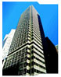

|
Unico Properties
Inc.
Unico
Properties, Inc.
100 Pine Street, San Francisco
San Francisco commercial recycler of the
year awarded to Township Building Services, Inc.
& Unico Properties, Inc.
Large Building Category, 400,000 Sq. Ft. + |
 |
First Place San Francisco Recycling Awards in 2000, 2001, 2003 &
2004
Unico Properties, 100 Pine Street, San Francisco
Large Office Building Category, 1st Place Cory Award. (Click to read
more)
CEL National Survey Analysis & Results (Township Exceeds
Expectations) (Click to read more) (PDF)
Township’s gives back over $ 25,000.00 bonus to 100 Pine Street
janitors & goes bowling. (Click to read more) (PDF)
|